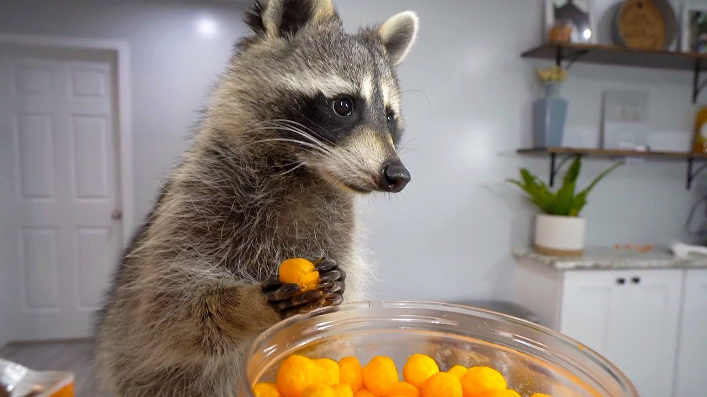

Insercion de imagen mediante el elemento img, con el recurso que apunta a la ruta de esta
Insercion de imagen URL, lo cual no tiene sentido debido a que hace que el navegador trabaje mas buscando la direccion IP, pero para fines educativos se presentara a continuacion

Imagen se presentara con un texto en situaciones en las que no pueda ser presentada, para poder representarlo, se escribira de forma erronea la direccion de la imagen, lo que generara que el texto alternativo se muestre

Se puede hacer uso de los atributos width y height para especificar el alto y ancho de una imagen. Se ajustaron las imagenes anteriores para que tengan un tamaño similar
se puede añadir el atributo title a las imagenes para proporcinar informacion de ayuda
Uso de elementos figure y figcaption para vincular una imagen con su pie